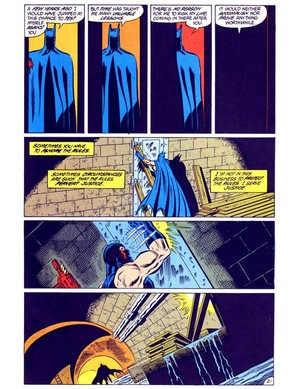
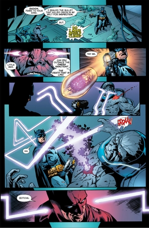
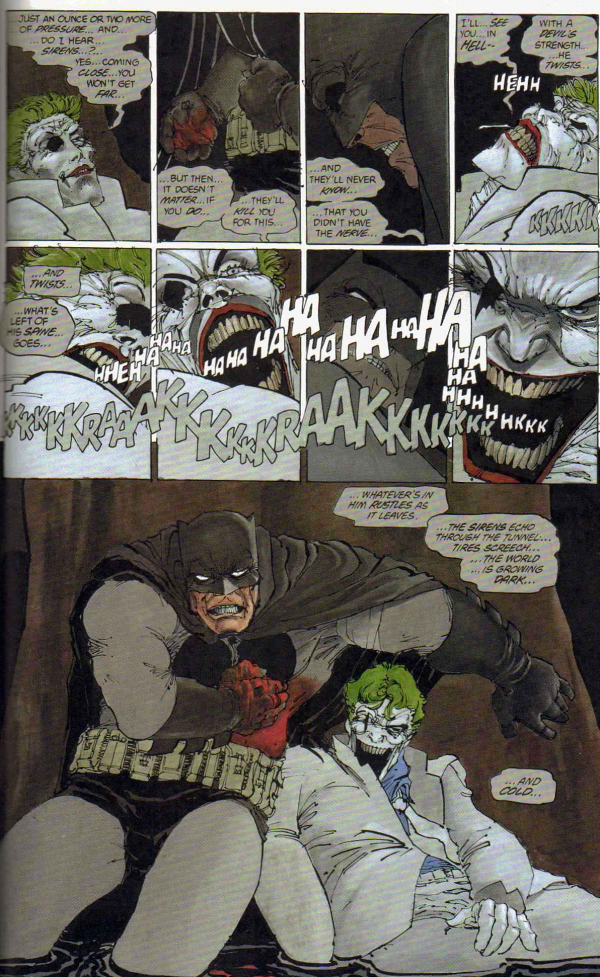
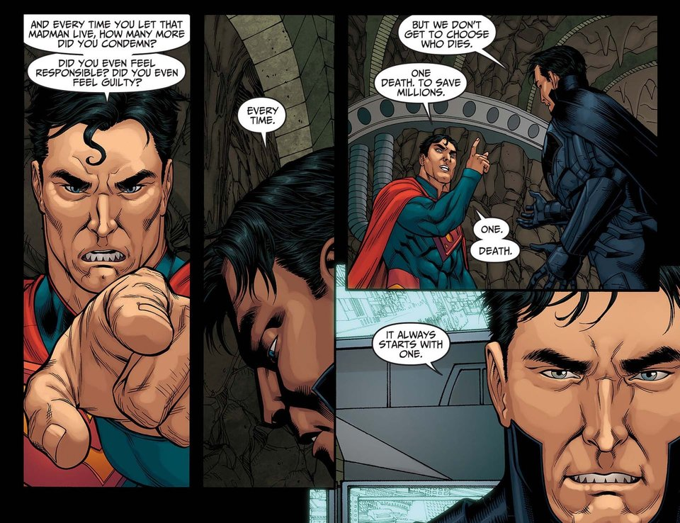
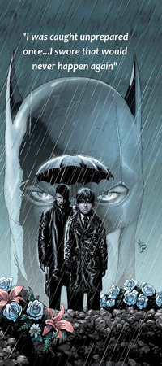
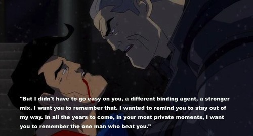
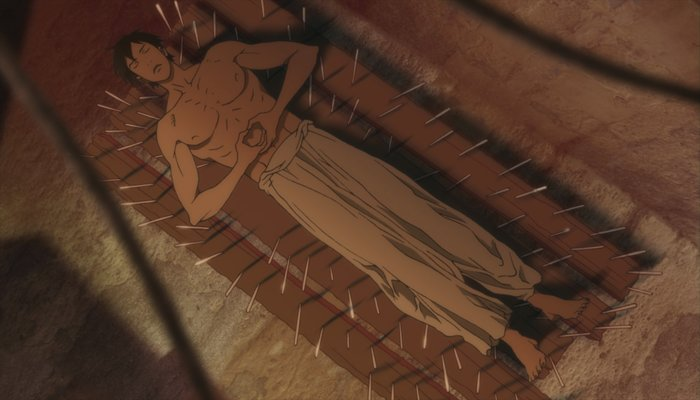
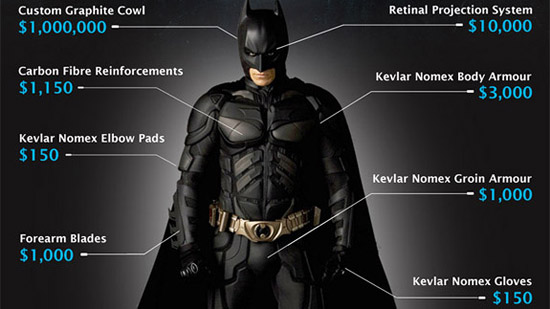

Characteristics of The Batman

This is a must read for all Batman believers out there, this is my analysis of who can be termed as Batman.I usually have hard time convicing people that Batman is one of the most complex characters of all times.This inspired me to write an article about the crux of Dark Knight's character. The following blog is based on the exploits of Batman in both the comics as well as DC animated movies. It does not include the nolen's interpretation of Batman.
Batman Does Not Kill... I Repeat... Batman Does Not Kill
Undoubtebly the foremost characteristics of Batman is that he does not kill, It keeps him under control. The self-control that Batman have to keep this rule under check is at level infinity, he cannot kill Joker so be bears the guilt of Joker's deathtrail. The comic Batman - Ego gives an excellent account on how he battles with his self control, give it a read. Ok, there are more than one instances where Batman has killed, but those are mostly accidental deaths and few stupid mistakes made by authors (like the one where he lets criminals burn while getting laid with Black Canary :P). There are few solid instances where batman has "killed" killed, one is where he kills KGBeast (see the comic) and one where he kills Darkseid
 
But as the comics progressed so did the character of Batman, aside from the speculation in The Killing Joke that Batman kills Joker, there has never been menton of any other Batman killing. Even in the alternate timeline in the movie "The Dark Knight Returns:Part 2" Joker commits suicide playing one last joke framing Batman. 
The Burden of "not killing" on Batman is huge and this is what he says to superman in the movie and comic The Dark Knight Returns, aha the chills!!!!!!!!1 
There Is No Such Thing As "An Unprepared Batman"
This is self explanatory, Batman is always prepared for everything I mean come on he swore it on his parent's grave. Almost whenever the world needs saving he is the first line of response. This quality is best seen in his encounters with justice league, in the movie Justice League:Doom he is contingency plan for each justice league member which were unfortunately stolen and batman managed to redeem himself by saving everyone's ass in the end. He manages to successful in blackmailing Darkseid in releasing Supergirl(can you imagine that) Also in the last moments of the movie The Dark Knight Returns:Part 2 when Batman fights with Superman, he is prepared till the very end in turn giving rise to one of THE MOST EPIC moment in the history of DC Universe.

Can He Even Feel The Pain(Physically I mean)
People always wonder, how can Batman keeps coming back, does he not feel pain. Let us be clear he has undegone years of training in controlling his pain under a "witch" cassendra in India which is shown in Working Through Pain as a part of the anthology film Batman:Gotham Knight. Even though he can control his physical pain he still remains venerable to emotional pain. In the comics Batman:Knightfall bane literally breaks the bat and yet he recovers, to bear that much pain is something that only Batman can achieve. So you never say to Batman, "Bro, do you even lift..."

Lastly, You litrally own everything!
Do I even need to go on this, let this picture do the talking.

He owns a satellite and funded for the Justice League headquaters... phew!! He literally owns everything in Gotham. Wnats more Superman owes him 50,000$ :P
Thank You and keep believing in the Bat!